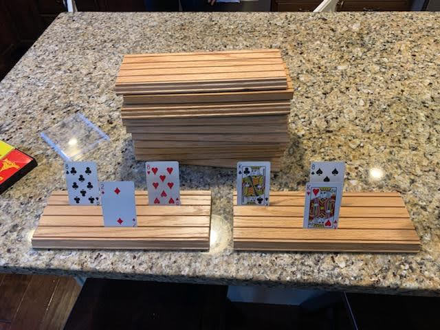
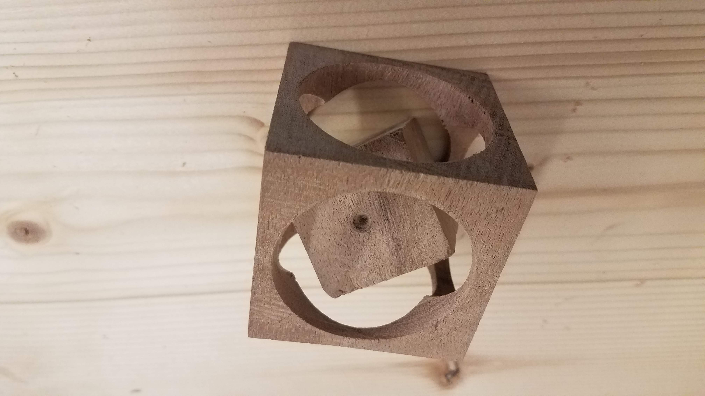
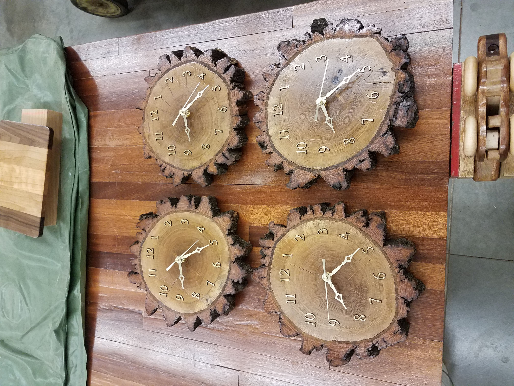
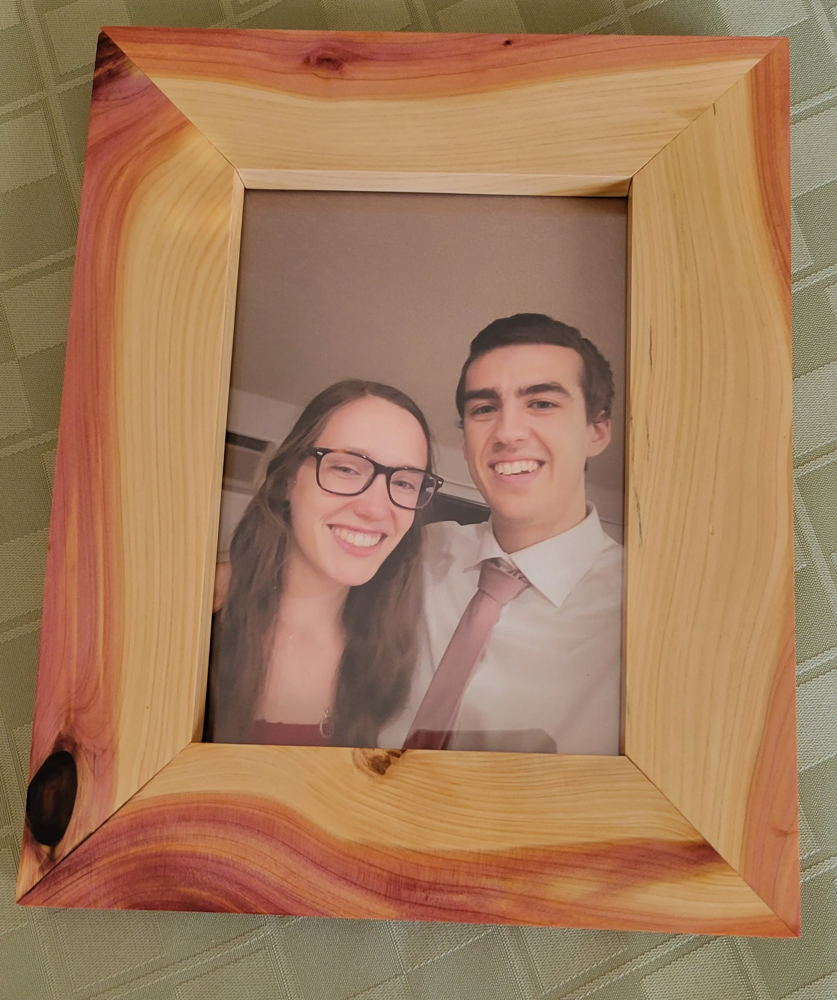
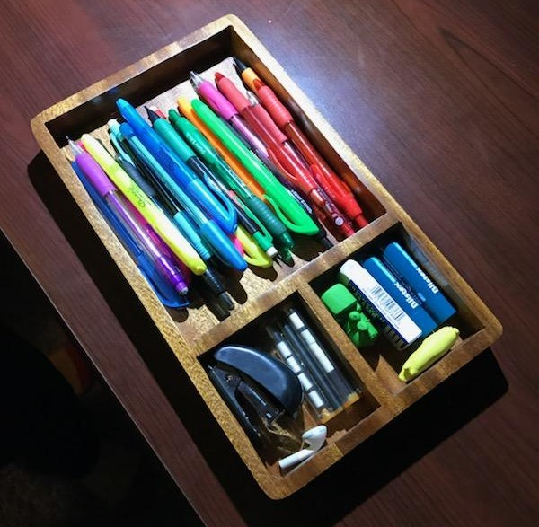
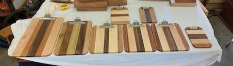
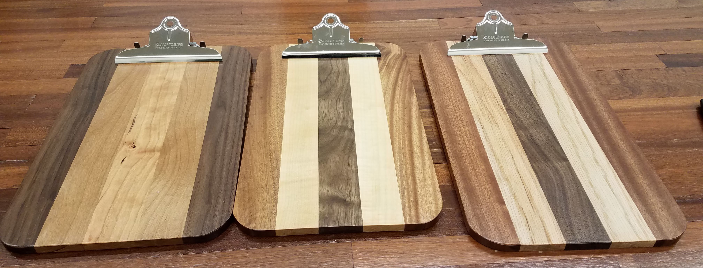

With down time in the shop in between larger projects, during the day on breaks, or when I am visiting home during a
semester I have worked on smaller projects which I can complete in a day or two with the exception of varnishing.
Backlit Sign Projects

My grandpa came up with a design for card holders. These card holders are useful for
playing card games that hands can get very large. They are also useful for card games with kids that can struggle
with hands of cards. I made a set of card holders for the local middle school's special education classroom after
working there over a break and seeing students struggle with holding cards.

The cube in a cube was a really quick project that was mentioned in a woodworking book
that I have. It can stump people holding it as they try to figure out how to remove the inner cube from the outer
cube. The secret is that it is impossible. The inner cube is manufactured within the inner cube by drilling holes
in from the six sides and then cutting through the remaining corners to loosen the inner cube. This is probably my
favorite project that can be done in a hour or two.

When I took shop class in middle school we had the project of making a log clock. I took that
project and repeated it a log from a lake that is very meaningful to my mom's side of the family. What is more the log
came from a tree that had a tree house a bunch of my family members grew up playing on. A bunch of my relatives had me
make more clocks with some of the remaining wood.

With some scrape cedar we had from refurbishing my great grandma's cedar chest I made a
picture frame for my girlfriend. I saw the marbling of the sapwood and heartwood of the cedar and knew I had to do
something with it. It just so happened that the grain in the corners lined up pretty nicely too. The picture frame turned out gorgeous and I really like how the epoxy fill on the corner of the
frame looks.I am very happy with how the frame turned out and that I could make use of some beautiful scrape wood.

One afternoon my younger brother was organizing his desk and he asked for a desk organizer
which I made for him. This was earlier into my time in the shop and was of the first projects I did completely independently.


In addition to the log clock project I did in middle school was making a clipboard.
After making the clipboard in class I wanted to make more as a gift to some of my teachers. In the following years
I have made dozens of these clipboards. They make a great gift and I enjoy how they display a variety of woods and how
it really highlights the wood making them up. These are just some of the clipboards I have made. I have made clipboards
of just about any of the hard woods we make use of in our workshop.